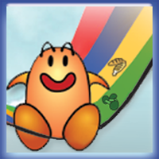
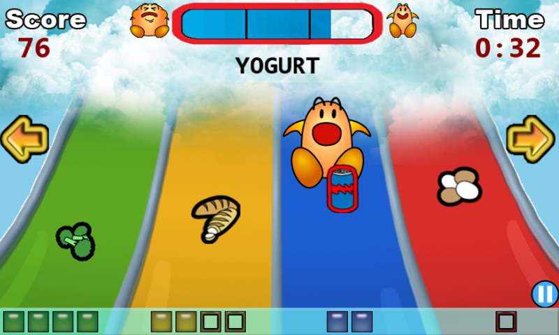
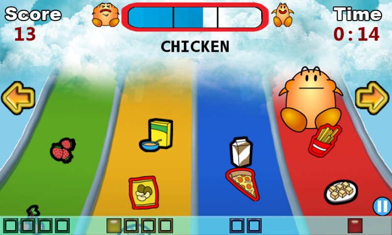

|    |
Nom Nom RiderOver 6000 downloads in the first two months!!! Race down an energy slide eating nummy food! Avoid fatty foods or you will grow too big! Collect sports and fitness activities to increase
your speed. Get bonus points for a balanced diet! My Role & ResponsibilityServed as a lead gameplay programmer spending most of my time programming in C# and XNA 4.0. In addition to that, I also took active participation in game design discussions and several brainstorming sessions.Total lines of code written: 2700 AchievementsThis project was achieved in 3 weeks by working during weekends and in our own leisure time. This project not only gave us the opportunity to learn about a new development platform (Windows Phone 7) which was about to release to the market but also provide us a golden opportunity to complete the game and make it available for Windows Phone 7 launch via zune marketplace. This project is a proven great success for our team. |